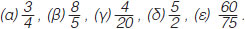

Δύο κλάσματα και λέγονται ισοδύναμα όταν εκφράζουν το ίδιο τμήμα ενός μεγέθους ή ίσων μεγεθών. Επειδή ακριβώς εκφράζουν το ίδιο τμήμα ενός μεγέθους είναι και ίσα και γράφουμε:
Αν δύο κλάσματα και είναι ισοδύναμα τότε τα "χιαστί γινόμενα" α · δ και β · γ είναι ίσα.
Δηλαδή:
Για να κατασκευάσουμε ισοδύναμα κλάσματα ή για να διαπιστώσουμε ότι δύο κλάσματα είναι ισοδύναμα, μπορούμε να εφαρμόζουμε τους παρακάτω κανόνες:
Όταν πολλαπλασιαστούν οι όροι ενός κλάσματος με τον ίδιο φυσικό αριθμό (≠0) προκύπτει κλάσμα ισοδύναμο.
Όταν οι όροι ενός κλάσματος διαιρεθούν με τον ίδιο φυσικό αριθμό (≠0) προκύπτει κλάσμα ισοδύναμο.
Η διαδικασία αυτή λέγεται απλοποίηση του κλάσματος και έχει ως αποτέλεσμα ένα κλάσμα ισοδύναμο με το αρχικό με μικρότερους όρους.
Το κλάσμα εκείνο που δεν μπορεί να απλοποιηθεί (δεν υπάρχει κοινός διαιρέτης αριθμητή και παρονομαστή) λέγεται ανάγωγο
Όταν δύο ή περισσότερα κλάσματα έχουν τον ίδιο παρονομαστή λέγονται ομώνυμα και όταν έχουν διαφορετικούς παρονομαστές ονομάζονται ετερώνυμα.
ΠΑΡΑΔΕΙΓΜΑΤΑ - ΕΦΑΡΜΟΓΕΣ
Να εξετάσετε αν τα κλάσματα: (α) και (β) και είναι ισοδύναμα.
(α)
Υπολογίζουμε τα "χιαστί γινόμενα", δηλαδή: 3 · 14 = 42 και 5 · 10 = 50
Τα γινόμενα δεν είναι ίσα, άρα και τα κλάσματα δεν είναι ισοδύναμα.
(β)
Υπολογίζουμε τα "χιαστί γινόμενα": 3 · 48 = 144 και 8 · 18 = 144
Τα γινόμενα είναι ίσα, άρα και τα κλάσματα είναι ισοδύναμα, δηλαδή: και
Να απλοποιηθεί το κλάσμα
Ο ΜΚΔ των όρων του κλάσματος 30 και 66 είναι: ΜΚΔ(30, 66) = 6
Διαιρούμε τους όρους του κλάσματος με το 6 και έχουμε:
Να μετατραπούν σε ομώνυμα τα κλάσματα , και
Πριν από κάθε μετατροπή ετερώνυμων κλασμάτων σε ομώνυμα ελέγχουμε αν τα κλάσματα απλοποιούνται.
Βρίσκουμε το ΕΚΠ των παρονομαστών των ανάγωγων ετερωνύμων κλασμάτων.
Διαιρούμε το ΕΚΠ με καθένα από τους παρονομαστές.
Πολλαπλασιάζουμε τους δύο όρους κάθε κλάσματος επί τον αντίστοιχο αριθμό που βρήκαμε.
Επομένως τα κλάσματα μετατράπηκαν στα ισοδύναμα ομώνυμα:
ΑΣΚΗΣΕΙΣ ΚΑΙ ΠΡΟΒΛΗΜΑΤΑ
Συμπλήρωσε τα παρακάτω κενά:
(α)
Δύο κλάσματα λέγονται ισοδύναμα, όταν ...................................................
(β)
Αν ισχύει , τότε οι όροι α, β, γ και δ συνδέονται με τη σχέση: .............................................................
(γ)
Ανάγωγο λέγεται το κλάσμα, το οποίο .......................................................................
(δ)
Ομώνυμα λέγονται τα κλάσματα, που έχουν .............................................................
(ε)
Ετερώνυμα λέγονται τα κλάσματα, που έχουν .............................................................
(στ)
Αν διαιρέσουμε και τους δύο όρους ενός κλάσματος με τον ΜΚΔ τους, το κλάσμα γίνεται .......................................... ...................................................................................................
Να εξετάσεις ποια από τα κλάσματα είναι ισοδύναμα:
Να μετατρέψεις καθένα από τα παρακάτω κλάσματα σε ισοδύναμο κλάσμα με παρονομαστή τον αριθμό 100:

Να μετατρέψεις τα παρακάτω κλάσματα σε ισοδύναμα με παρονομαστή τον αριθμό 3:
Να τρέψεις το κλάσμα σε ισοδύναμο κλάσμα με παρονομαστή:(α) 6, και (β) 15.
Να συμπληρώσεις τα κενά, ώστε να προκύψουν ισοδύναμα κλάσματα:
Να απλοποιήσεις τα κλάσματα:
Να βρεις ποια από τα κλάσματα είναι ανάγωγα:
Να γίνουν ομώνυμα τα παρακάτω κλάσματα:
Τοποθέτησε ένα "x" στην αντίστοιχη θέση
ΣΩΣΤΟ
ΛΑΘΟΣ
(α)
Το κλάσμα απλοποιείται με το 5
(β)
Το κλάσμα είναι ανάγωγο.
(γ)
Αν το κλάσμα τραπεί σε ισοδύναμο με παρονομαστή 24, ο αριθμητής του θα είναι
διπλάσιος του x.
(δ)
Αν πολλαπλασιάσουμε τον αριθμητή και τον παρονομαστή ενός κλάσματος επί 4, το κλάσμα θα γίνει 4 φορές μεγαλύτερο.